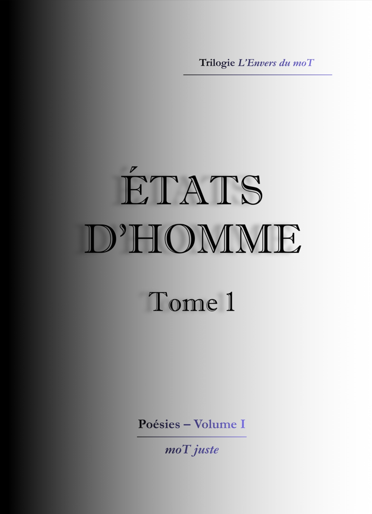
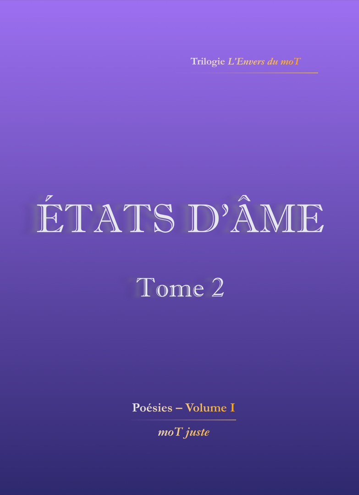
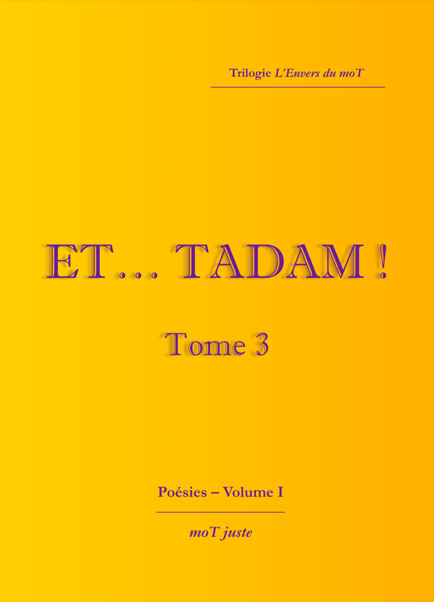
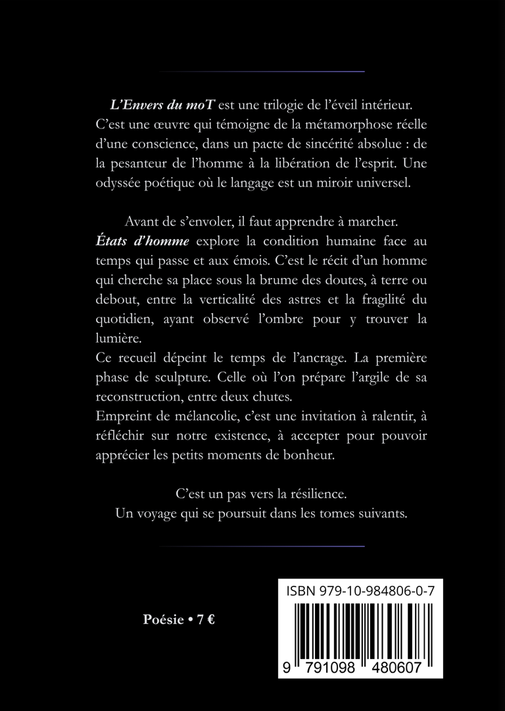
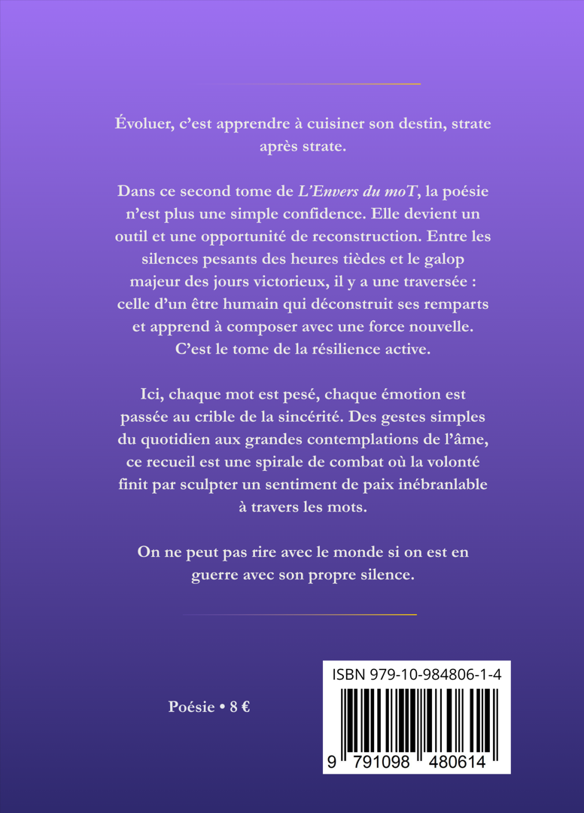
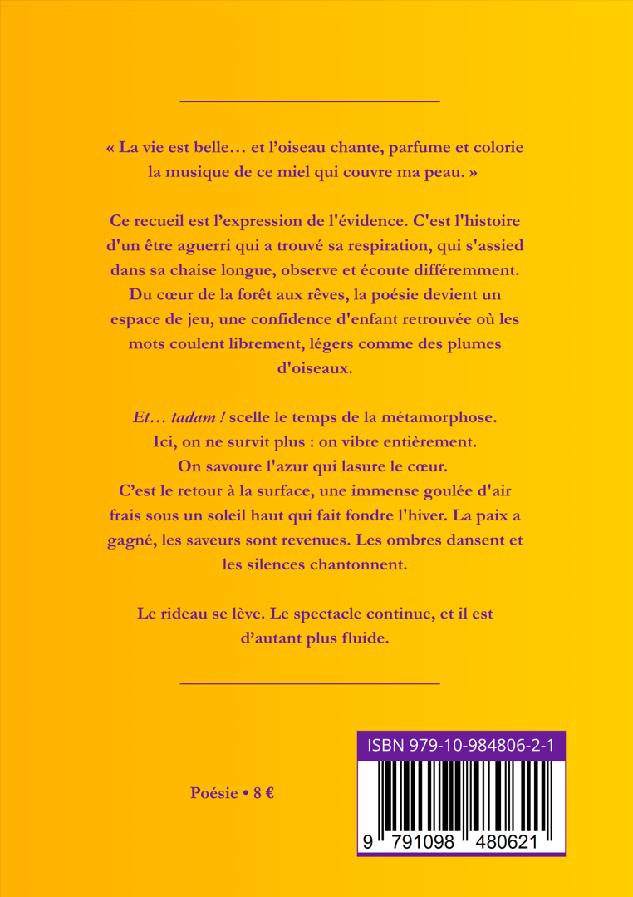

Recueils de poésie & écrits originaux




Quatrième de couverture
L'Envers du moT est une trilogie de l'éveil intérieur. C'est une œuvre qui témoigne de la métamorphose réelle d'une conscience, dans un pacte de sincérité absolue : de la pesanteur de l'homme à la libération de l'esprit. Une odyssée poétique où le langage est un miroir universel.
Avant de s'envoler, il faut apprendre à marcher. États d'homme explore la condition humaine face au temps qui passe et aux émois. C'est le récit d'un homme qui cherche sa place sous la brume des doutes, à terre ou debout, entre la verticalité des astres et la fragilité du quotidien, ayant observé l'ombre pour y trouver la lumière.
Ce recueil dépeint le temps de l'ancrage. La première phase de sculpture. Celle où l'on prépare l'argile de sa reconstruction, entre deux chutes. Empreint de mélancolie, c'est une invitation à ralentir, à réfléchir sur notre existence, à accepter pour pouvoir apprécier les petits moments de bonheur.
C'est un pas vers la résilience. Un voyage qui se poursuit dans les tomes suivants.

Quatrième de couverture
Évoluer, c'est apprendre à cuisiner son destin, strate après strate.
Dans ce second tome de L'Envers du moT, la poésie n'est plus une simple confidence. Elle devient un outil et une opportunité de reconstruction. Entre les silences pesants des heures tièdes et le galop majeur des jours victorieux, il y a une traversée : celle d'un être humain qui déconstruit ses remparts et apprend à composer avec une force nouvelle. C'est le tome de la résilience active.
Ici, chaque mot est pesé, chaque émotion est passée au crible de la sincérité. Des gestes simples du quotidien aux grandes contemplations de l'âme, ce recueil est une spirale de combat où la volonté finit par sculpter un sentiment de paix inébranlable à travers les mots.
On ne peut pas rire avec le monde si on est en guerre avec son propre silence.

Quatrième de couverture
« La vie est belle... et l'oiseau chante, parfume et colorie la musique de ce miel qui couvre ma peau. »
Ce recueil est l'expression de l'évidence. C'est l'histoire d'un être aguerri qui a trouvé sa respiration, qui s'assied dans sa chaise longue, observe et écoute différemment. Du cœur de la forêt aux rêves, la poésie devient un espace de jeu, une confidence d'enfant retrouvée où les mots coulent librement, légers comme des plumes d'oiseaux.
Et... tadam ! scelle le temps de la métamorphose. Ici, on ne survit plus : on vibre entièrement. On savoure l'azur qui lasure le cœur. C'est le retour à la surface, une immense goulée d'air frais sous un soleil haut qui fait fondre l'hiver. La paix a gagné, les saveurs sont revenues. Les ombres dansent et les silences chantonnent.
Le rideau se lève. Le spectacle continue, et il est d'autant plus fluide.